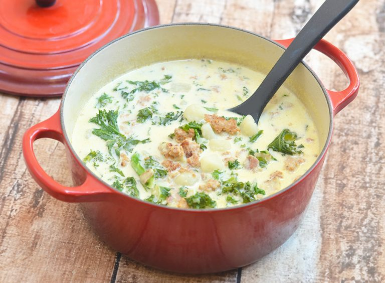

SPICY TUSCAN SAUSAGE SOUP
6 SERVINGS
30 MINUTES

INGREDIENTS
- 1/2 Onion, Diced
- 3 Hot Italian Sausages
- 5 Potatoes
- 4 Cups Chicken Broth
- 1 Cup Heavy Cream (or 1.5 Cups Half & Half)
- 1 Bunch of Kale
- Salt and Pepper to Taste
DIRECTIONS
- Remove the casings from the sausage and add to a pot until browned.
Then remove from pot and set aside.
- Dice the onion and saute until golden.
- Cube potatoes and add both potatoes and broth to the pot.
Bring to boil and allow potatoes to fully cook.
- Add cream and kale to the pot.
Keep heat on until the cream is warm and kale is wilted.
- Add sausage back in and adjust for salt and pepper.
- Serve warm with crusty bread and enjoy!
Back to Recipes